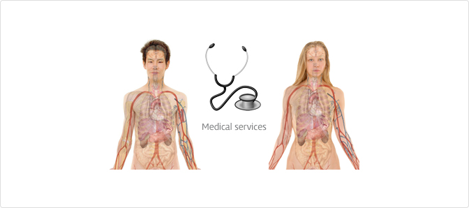

특수수탁검사 안내
저희 인하대병원에서는 지역 병·의원에 진료서비스를 확대 제공하여 원활한 진료를 돕고
지역 주민의 건강 증진에 기여하고자 수탁(受託) 검사 제도를 운영하고 있습니다.

진료중 정밀 검사가 필요하다고 판단되는 환자를 의뢰하는 방법의 일환으로써, 인하대병원의 진료 절차를 거치지 않고, 해당 진료과 검사 예약 및 검사를 시행하신 후,
검사 결과를 가지고 귀 병·의원으로 회송할 수 있도록 만든 System 입니다. 수탁(受託) 검사 의뢰 시, 담당 부서나 진료협력센터로 연락 주시면 예약을 하실 수 있습니다.
참고사항
- 환자가 직접 내원하여 본원 원내 장비를 이용, 검사하는 방법으로써, 검체만 보내어 검사하는 "검체 수탁 검사"와 상이함
- 검사 성격에 따라 본원 진료의의 진료가 선행되는 경우, 검사 항목이 추가될 수 있어 추가 비용 발생 가능할 수 있음
수탁검사 Flow
1단계
지역 병·의원
- 환자 진료 후 수탁검사결정
- 해당 부서 검사예약
- 수탁검사 의뢰서 작성(CD or 검사결과지 지참)
2단계
인하대병원 1층 진료협력센터 방문
(검사당일)
- 수탁검사 부서 Fee Free 접수(수탁검사 의뢰서 지참)
- 수탁검사 처방 및 검사비 수납
- 검사 시행
- 결과제공 : 검사실 or 진료협력센터에서 우편/팩스 발송
3단계
지역 병·의원
환자 진료(수탁검사 결과를 토대로 한 진료)
특수수탁 검사예약
- 진료협력센터 : (032)890-3500 / 080-339-2000
- 해당검사 부서 검사실
특수수탁 검사예약 검사실 전화번호를 안내하는 표입니다.
| 검사부서 |
외래(032-) |
예약 및 결과 문의(032-) |
| 비뇨기과 |
890-2360 |
|
| 소화기내과 |
890-2224 |
내시경 센터 890-2542~3 |
| 신경과 |
890-3860 |
신경검사실 890-2390 |
| 심장내과 |
890-2200 |
순환기 센터 890-2440 |
| 안 과 |
890-2400 |
안과검사실 890-2411 |
| 영상의학과 |
890-2740~3 |
|
| 이비인후과 |
890-2420~1 |
검사실 890-2432,2434 |
| 재활의학과 |
890-2480~1 |
검사실 890-2484 |
| 정신과 |
890-3880 |
검사실 890-3884 |
| 핵의학과 |
890-3160 |
|
| 호흡기내과 |
890-2216,2219 |
검사실 890-3875 |
준비물
- 수탁(受託)검사 의뢰서 필참
- 가. 환자정보
- 나. 진단명 및 임상소견
- 다. 검사부서, 검사항목 명(정확히 기입 요망)
- 라. 의뢰일자, 병원 정보
- 관련 CD영상 or 혈액검사 결과지
찾아오실 곳 :
진료협력센터
- 수탁 One Stop 접수(Fee Free) / 검사비 수납가능
- 외부 영상 CD 사전 등록
검사수가 안내
- 진료과(검사부서) 진찰료 Fee Free 적용
- 검사수가 : 의료보험 100% 수가 적용
- 진료비 영수증 및 상세내역서 발급, 제공
- 해당 병·의원에 진료비 영수증 및 상세내역서 제출
- 해당 병·의원에서 보험 적용 및 환급 신청
- 산재·자보 적용 가능 : 지불보증서 先 제출 필수
- 일부, 진료의 사전 진료 내용에 따라 추가 비용 발생 가능
수탁 검사 결과
- 검사결과는 각 검사 부서 마다 상이한 방법으로 제공될 수 있음
- 영상의학과 및 핵의학과, 안과 등의 영상 결과 : 검사 당일, CD복사하여 제공( CD 복사비 Fee Free적용함)
- 당일 판독이 불가한 경우, 향후 우편 or Fax로 제공 예정
- 결과에 대한 문의는 해당 검사부서 or 진료협력센터로 문의 요망